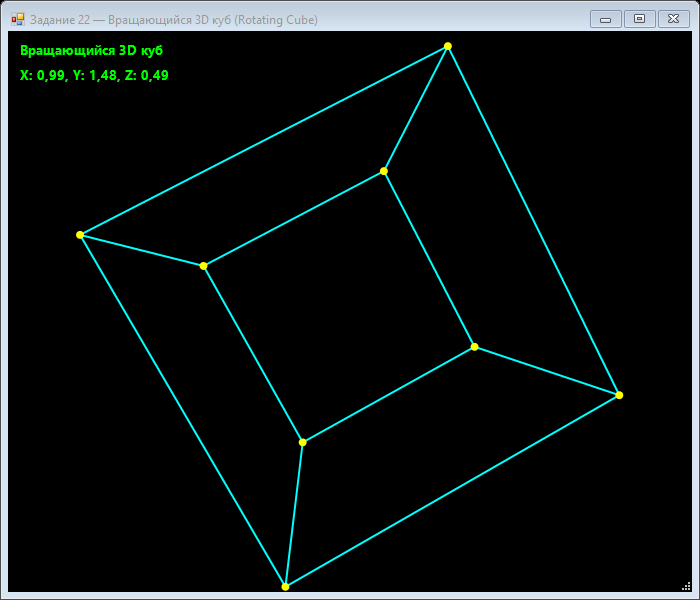

Урок 8.2: Ротация 3D-куба
3D в 2D
Для создания эффекта трёхмерного объекта используется набор вершин в пространстве и матрицы поворота. Затем 3D-точки проецируются на экран.
private PointF Project(Vector3D v)
{
float scale = 400 / (v.Z + 300);
return new PointF(
ClientSize.Width / 2 + v.X * scale,
ClientSize.Height / 2 + v.Y * scale
);
}Повороты
Вращение вокруг осей X, Y и Z меняет координаты вершин по косинусам и синусам.
📝 Пример задания — вращающийся 3D-куб
8 вершин куба трансформируются тремя матрицами вращения, затем проецируются на экран с перспективой. Таймер 16 мс анимирует вращение по всем трём осям:
using System;
using System.Drawing;
using System.Drawing.Drawing2D;
using System.Windows.Forms;
namespace CSharpGraphicsApp
{
public class Task22_RotatingCube : Form
{
private float rotX = 0, rotY = 0, rotZ = 0;
private readonly Timer timer = new Timer();
private Vector3D[] cubeVerts = new Vector3D[8];
private Vector3D[] projected = new Vector3D[8];
public class Vector3D
{
public float X, Y, Z;
public Vector3D(float x, float y, float z) { X = x; Y = y; Z = z; }
}
public Task22_RotatingCube()
{
Text = "Задание 22 — Вращающийся 3D-куб (Rotating Cube)";
Size = new Size(700, 600);
BackColor = Color.Black;
DoubleBuffered = true;
Paint += Form_Paint;
float s = 100;
cubeVerts[0] = new Vector3D(-s, -s, -s); cubeVerts[1] = new Vector3D(s, -s, -s);
cubeVerts[2] = new Vector3D(s, s, -s); cubeVerts[3] = new Vector3D(-s, s, -s);
cubeVerts[4] = new Vector3D(-s, -s, s); cubeVerts[5] = new Vector3D(s, -s, s);
cubeVerts[6] = new Vector3D(s, s, s); cubeVerts[7] = new Vector3D(-s, s, s);
timer.Interval = 16;
timer.Tick += (s2, e) => { rotX += 0.01f; rotY += 0.015f; rotZ += 0.005f; Invalidate(); };
timer.Start();
FormClosed += (s2, e) => timer.Stop();
}
private Vector3D RotateX(Vector3D v, float a)
{
float c = (float)Math.Cos(a), s = (float)Math.Sin(a);
return new Vector3D(v.X, v.Y * c - v.Z * s, v.Y * s + v.Z * c);
}
private Vector3D RotateY(Vector3D v, float a)
{
float c = (float)Math.Cos(a), s = (float)Math.Sin(a);
return new Vector3D(v.X * c + v.Z * s, v.Y, -v.X * s + v.Z * c);
}
private Vector3D RotateZ(Vector3D v, float a)
{
float c = (float)Math.Cos(a), s = (float)Math.Sin(a);
return new Vector3D(v.X * c - v.Y * s, v.X * s + v.Y * c, v.Z);
}
private PointF Project(Vector3D v)
{
float scale = 400 / (v.Z + 300);
return new PointF(
ClientSize.Width / 2 + v.X * scale,
ClientSize.Height / 2 + v.Y * scale);
}
private void Form_Paint(object sender, PaintEventArgs e)
{
e.Graphics.SmoothingMode = SmoothingMode.AntiAlias;
e.Graphics.Clear(Color.Black);
for (int i = 0; i < cubeVerts.Length; i++)
{
var v = RotateX(cubeVerts[i], rotX);
v = RotateY(v, rotY);
v = RotateZ(v, rotZ);
projected[i] = v;
}
using (var pen = new Pen(Color.Cyan, 2))
{
// передняя грань
DrawEdge(e.Graphics, pen, 0, 1); DrawEdge(e.Graphics, pen, 1, 2);
DrawEdge(e.Graphics, pen, 2, 3); DrawEdge(e.Graphics, pen, 3, 0);
// задняя грань
DrawEdge(e.Graphics, pen, 4, 5); DrawEdge(e.Graphics, pen, 5, 6);
DrawEdge(e.Graphics, pen, 6, 7); DrawEdge(e.Graphics, pen, 7, 4);
// боковые рёбра
DrawEdge(e.Graphics, pen, 0, 4); DrawEdge(e.Graphics, pen, 1, 5);
DrawEdge(e.Graphics, pen, 2, 6); DrawEdge(e.Graphics, pen, 3, 7);
}
using (var brush = new SolidBrush(Color.Yellow))
{
foreach (var v in projected)
{
var p = Project(v);
e.Graphics.FillEllipse(brush, p.X - 4, p.Y - 4, 8, 8);
}
}
e.Graphics.DrawString("Вращающийся 3D-куб",
new Font("Segoe UI", 10, FontStyle.Bold), Brushes.Lime, 10, 10);
}
private void DrawEdge(Graphics g, Pen pen, int i1, int i2)
{
g.DrawLine(pen, Project(projected[i1]), Project(projected[i2]));
}
}
}Практическое задание
- Создайте массив вершин куба.
- Реализуйте функции RotateX, RotateY, RotateZ.
- Проецируйте вершины на экран.
- Рисуйте ребра куба.
Задание по аналогии: Вращающийся 3D-куб
По аналогии с Task22_RotatingCube создайте полное приложение с 3D-проекцией.
- Создайте вспомогательный класс
Vector3Dс полямиX, Y, Zи конструктором. Объявите 8 вершин куба с координатами ±s (например, s = 100). - Реализуйте методы
RotateX,RotateY,RotateZ— каждый принимает вектор и угол (радианы) и возвращает повёрнутый вектор по формуле с cos/sin. - Реализуйте метод
Project(Vector3D v)с перспективной проекцией:scale = 400 / (v.Z + 300),screenX = Width/2 + v.X * scale. - В
Timer_Tickувеличивайте три угла вращения, вForm_Paintпреобразуйте все вершины и нарисуйте 12 рёбер куба (DrawLineмежду парами проекций). - Дополнительно: закрашивайте грани с разным цветом в зависимости от нормали (простейшее освещение по Z-компоненте).
Пример результата выполнения задания:

Скриншот программы (Task22)
💡 Совет: При рисовании рёбер вызывайте
Project для текущего (уже повёрнутого) массива projected, а не для исходных cubeVerts — иначе куб будет выглядеть не вращающимся.
Проверка
Почему проекция зависит от Z-координаты? Как влияет вращение по разным осям?